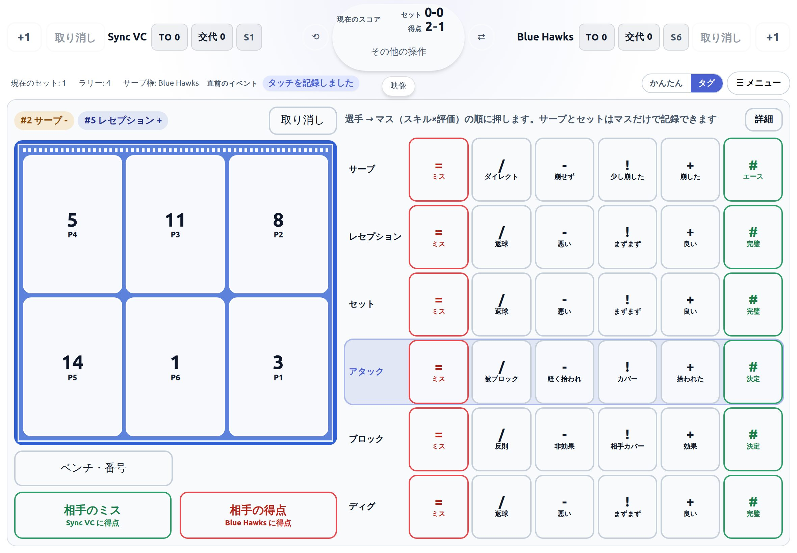
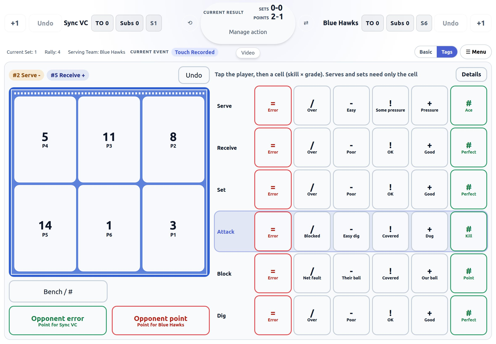
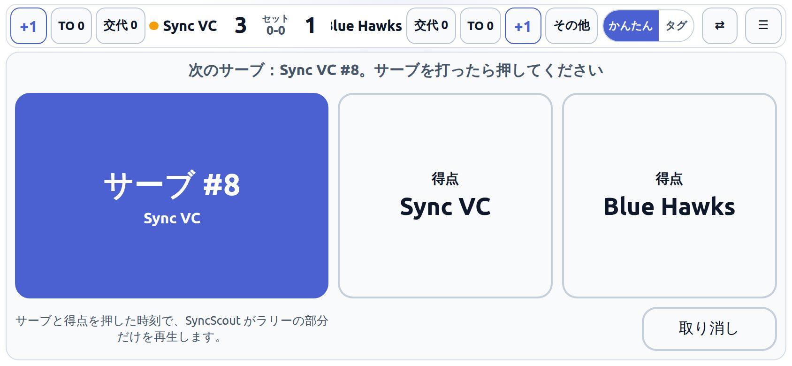
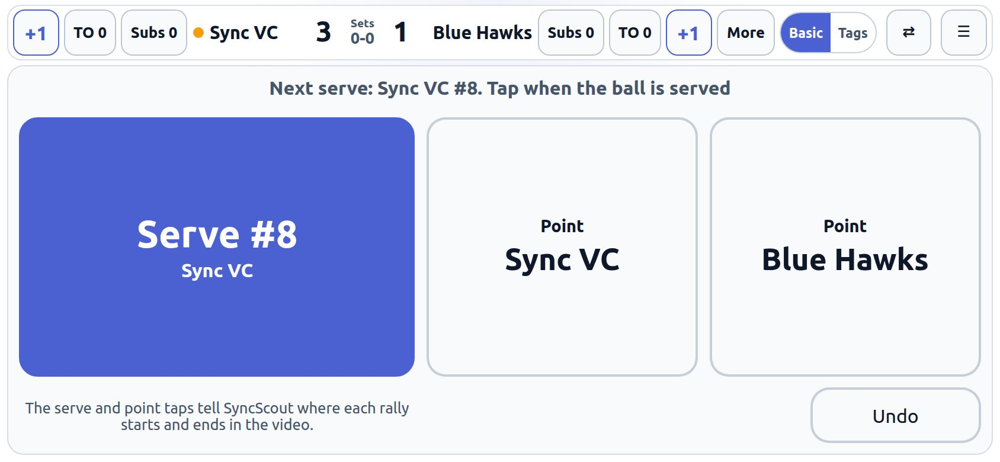

Sync Scout Live は、タブレットやスマホでその場で試合を記録するスカウティングアプリです。記録した試合は .dvw として SyncScout に送れば、YouTube の試合動画とつながり、チーム全員がラリーごとに見返せます。
インストール不要。ブラウザで開くだけで使え、ホーム画面に追加すればネットのない体育館でも動きます。


iPad でのタグ入力。選手とマスを押すだけで、1プレーが記録されます。
選手を押して、「スキル × 評価」のマスを押すだけ。テンキーでコードを打つ必要はありません。サーブとセットはマスを押すだけで、サーバーとセッターが自動で入ります。
選手名の登録は不要。スタメンは「ポジション → 背番号」のタップで入ります。相手チームは名前がなくても始められます。
サイドアウトのたびにローテーションが回り、次のサーバーを表示します。記録にもローテーションが残るので、SyncScout でローテーション別のサイドアウト・ブレイクがそのまま見られます。
サーブと得点を押した時刻がそのままラリーの始まりと終わりになります。SyncScout では、ラリーの間を飛ばして試合を見返せます。
一度開けばアプリ全体が端末に保存され、電波の届かない体育館でも使えます。記録は端末の中にだけ保存され、送るまで外に出ません。
YouTube の URL と、最初のサーブの動画上の時刻を入れて送るだけ。全プレーの時刻が動画に合わせて書き出されます。DataVolley 互換の .dvw としても保存できます。
試合中でも切り替えられます。はじめての人は「かんたん」から、慣れてきたら「タグ」へ。


試合を作り、セットの初めにスタメンを背番号で入れて、かんたんかタグで記録します。端末は横向きで使います。
試合後に「SyncScout に送る」を押し、YouTube の URL と最初のサーブの時刻を入れます。ログインは SyncScout と同じチームID と合言葉です。
試合は SyncScout のチームに登録され、コーチも選手もそれぞれの端末から、プレーやラリーを選んで動画を見られます。
スマホを横向きにすれば、ベンチからでも記録できます。
Sync Scout Live は無料で使えます。記録した試合をチームで動画と一緒に見返すには、SyncScout のチーム登録が必要です。料金は SyncScout のサイトをご覧ください。
はい。そのためのアプリです。書き出す .dvw は DataVolley 互換の形式なので、SyncScout でもほかの DataVolley 対応ツールでも読み込めます。
使っている端末のブラウザの中だけです。サーバーには送られません。例外は「SyncScout に送る」を押したときで、その試合だけがログインしたチームに送られます。ブラウザのデータを消すと記録も消えるので、「データ」画面からこまめにバックアップしてください。
できます。タグ入力の「詳細」にある「記録するチーム」で「両チーム」を選ぶと、12人を並べてどちらのプレーも記録できます。自チームだけのときも、相手のサーブは自動で記録されます。
いりません。会場では記録するだけで、動画は試合後に YouTube へ上げてください。送るときに最初のサーブの時刻を入れれば、全プレーの時刻が動画に合います。ずれたときは −15〜+15 秒で微調整できます。
はい。アプリのメニューバー右端の「EN / JP」で切り替えられます。